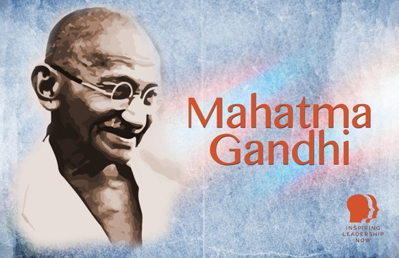

Mahatma Gandhi
Mahatma Gandhi, the leader of India’s independence movement, left an indelible mark on the world through his non-violent civil disobedience. Born in 1869 in British-occupied India, he transformed from a rebellious youth to a global symbol of peace and justice. His turning point came in 1893 when he was thrown off a train in South Africa for refusing to move to a segregated car, sparking his lifelong commitment to fight discrimination. In South Africa, Gandhi organized his first mass civil disobedience campaign, advocating for Indian rights.
Returning to India, Gandhi became a central figure in the struggle for independence, spearheading the Quit India movement in 1942, which eventually led to Britain's withdrawal. Despite his pacifist beliefs, he was assassinated in 1948 by a Hindu extremist who opposed his tolerance of Muslims.
Gandhi's legacy endures through his advocacy for nonviolence, love, tolerance, and simple living. He inspired global civil rights movements, from Apartheid South Africa to the United States, and remains one of the greatest leaders of the 20th century.